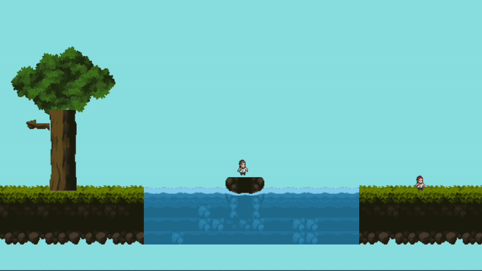

Group project · Playable prototype
Post Pals
A shared route. A team effort.
A two-player platformer built around cooperation and a postal delivery route. My work focused on the map layout and how players and enemies move through the level.
My part in the project
A route to explore.
Movement to match.
I worked with a group on a platformer designed around two players navigating obstacles together. My contribution focused on the level layout and player and enemy movement.
I worked on terrain, platform, and gap placement to shape the route through the map. On the gameplay side, my work involved walking, jumping, rolling, and bee enemy movement.
This is a shared team project. My contribution is the level and movement work described here; the wider game, artwork, and audio are not presented as my individual creation.
The development work
Three parts of
the experience.
- 01
Shape the route
Arrange terrain, platforms, and gaps to create the path through the level.
- 02
Move through it
Support player movement with walking, jumping, and rolling behavior.
- 03
Add an encounter
Work on bee enemies that begin chasing when triggered and can return to their starting area.
From the prototype
Movement in motion.
A short loop included with the project shows the characters navigating a section of the map.
Show the short gameplay loop

Close this panel to hide the animation. This recording comes from the supplied project.
Work in progress
Playable together.
Still taking shape.
Post Pals remains an unfinished playable prototype. The current project contains a tile-based level, two player characters, bee enemies, and environmental interactions.
The broader game concept includes more delivery routes and mechanics. This page focuses on the level and movement work present in this version.
Team prototype · In development